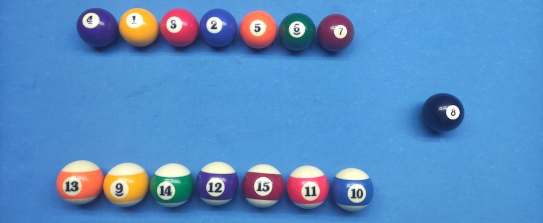

The Rules: 8-ball
Welcome to my guide on the rules of 8-ball pool, one of the most popular cue sports games in the world. Originally played in the early 1900s, 8-ball pool has become a staple of pool halls, bars, and homes everywhere, enjoyed by casual players and professionals alike.
How to play?
The objective of 8-ball pool is to use your cue stick to pocket all of your designated balls (either solids or stripes) and then sink the 8-ball to win the game. Sounds simple enough, but there are a number of specific rules and strategies to keep in mind when playing this game.
Here is the list of additional considerations when playing 8-ball according to CSI (Cue Sports International):
- At the beginning of the game, the balls are arranged in a triangular rack and the cue ball is placed behind the head string [1] for the break shot.
- If a ball is pocketed on the break, it does not assign ball groups to the players. A player needs to pocket a stripe or a solid in order to choose their group. However, making one or more balls on the break lets the player continue their turn.
- If a player pockets their designated group of balls and then pockets the 8 ball on the same shot, they lose the game.
- If the 8 ball is pocketed prematurely (before the player has pocketed their group of balls), the player loses the game.
- If the 8 ball is not pocketed on the break, it remains in play as a live ball.
Break
Breaking the rack is an important part of pool: on the professional level, a nice break shot is often the key to winning a game. A legal break shot in 8-ball is done by placing the cue ball anywhere behind the head string and hitting the rack in a way that at least 4 balls from it touch the rail. Pro Tip: most good players break the rack of 8-ball from the middle of the kitchen line or a few inches to the side of it. Breaking from that area lets the cue ball transfer all of its impulse to the balls making them spread nicer and raising the chance of pocketing a ball.

Fouls
Every game in pool has the concept of foul, or an illegal shot. There is always a penalty charged to the player who fouled, and the opponent gets some kind of advantage. Let’s look at all possible foul cases in 8-ball:
-
Just like in most games of pool, pocketing the cue ball is a foul (it’s called a scratch). The opponent gets
ball in hand
and places the cue ball anywhere on the table [2] for their next shot.
-
Another type of foul is hitting a wrong ball with the cue ball. When stripes and solids are picked by players, the player who chose solids can only hit balls 1-7 first, and the other player can only do 9-15. Hitting your opponent’s ball or the 8 ball is a foul – player gets ball in hand.

-
If a player touches any ball on the table [3] with their cue stick, hand, apparel, or any object other than the cue tip, it is ball in hand for the opponent.

-
If any ball flies off the table, it is ball in hand. Any object ball driven off the table stays in the pocket and doesn’t get spotted [4].

-
No rail after the shot. If none of the balls touches at least one rail after the contact, and nothing is pocketed, the shot is considered illegal. Ball in hand.

Flukes
Another thing to keep in mind is accidentally pocketed balls, or flukes. In 8-ball, any fluked ball stays in the pocket, but does not give the player an opportunity to continue the turn. Players have to make their intention clear as for what ball into what pocket they are trying to make. In other words, 8-ball is a call shot game. Remember that pocketing the 8 while your balls are still on the table is a loss, so make sure you don’t fluke it!
Safety
All possible shots in pool games can be divided into 2 categories: offensive and defensive shots. It is important to know when and how to use both in order to win more games. Defensive shots are usually called safeties or playing safe. If a player decides to play safe, they don’t go for a pot [5], but rather try to put the cue ball in an awkward or uncomfortable position for their opponent.
8-ball has a special safety rule. At any time during the game, you have an option to call defense
and make one of your balls. In this case the turn will go back to your opponent, and the pocketed ball will stay in the pocket. Pro Tip: think how you can use this tool to benefit from a bad position.
Racking tip: When racking 8-ball, it is considered good practice to alternate solids and stripes instead of putting them next to each other. That way the balls are more likely to spread evenly after the break and not leave any player with a better layout.
Example Rack
Now that you are familiar with the rules, it’s time to try 8-ball. I hope you enjoy this game!
References
- Head string (sometimes referred to as kitchen line) is the line running across the pool table from the second diamond on one long rail to the second diamond on the other long rail. This line separates the so-called
kitchen area
from the rest of the table. - There is an exception to this: if the cue ball is pocketed on the break, the incoming player can put the ball anywhere behind the head string.
- Different tournaments may have 2 variations of this rule: it is either
all ball fouls
(when ball in hand is given for any illegal touch), orcue ball fouls
(when ball in hand is only given in case of touching the cue ball on accident). - To spot a ball means to take it out of a pocket and put it on the spot (the middle mark on a pool table located where the second diamond lines cross)
- Pot – a short term for making or pocketing a ball. The act of making a ball is referred to as pot.